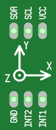

In this project, we will add a new component — a cool little circuit board called an accelerometer.
You've probably used an accelerometer before and haven't even realized it. Have you ever used a smart phone or an iPad and rotated the screen? What happens? Yup, the display rotates with the device. Did you ever wonder how the phone or tablet knows to rotate the display? It's done using an accelerometer very similar to the one in our kit that we're going to start using now. As you'll see, there are lots of cool applications for accelerometers when designing and building electronics.
The accelerometer included with the CREATOR Kit is in the bag marked Accelerometer Ready Set STEM Cell. Feel free to pull it out now.
By plugging in the accelerometer to the CREATOR Kit and then writing code to get information (input) from it, we can turn our hardware into a controller that can detect changes in movement (acceleration) along the three axes — left/right, front/back and up/down. Using this information, we can determine the orientation of the kit (which way it's facing) and/or the vector of the kit (which is just the speed and direction the kit is moving) at any given time.
Your Accelerometer Ready Set STEM Cell contains a single part — the accelerometer circuit board — that looks like this (from the top):
On the circuit board above, you'll see a diagram with 3 arrows, labeled X, Y and Z. Note that it looks like only two arrows, X and Y. The third arrow, the Z arrow, is somewhat hidden — it is a circle with a dot. The Z arrow is actually pointing up perpendicularly from the circuit board (imagine the arrow popping out of the screen and coming towards your face) — the dot in the middle of the circle represents the front tip of the arrow.
The accelerometer measures forces — this can be the forces it feels when you move it around, or simply the force of gravity. When the kit is sitting on a table and not moving, it reports just the force of gravity, in the X, Y, and Z directions:
When one of the arrows on the board points up, the force in that direction will be 1.
When one of the arrows on the board points down, the force in that direction will be -1.
When one of the arrows on the board points neither up nor down (perpendicular to the force of gravity), the force in that direction will be 0.
When one of the arrows on the board is pointed somewhere in-between directly down and directly up, then the force will be somewhere in between -1 and 1.
Here are a couple examples:
When the CREATOR Kit is sitting flat on a table, the Z arrow (the one coming out of the screen at you) is pointing directly up in the air; the X and Y arrows are parallel with the table. If we did a reading of the accelerometer in this situation, it would that X and Y are about 0 (since they are pointing halfway between up and down) and a Z of about 1 (since it's point directly upwards.
If you flip the CREATOR Kit over — so the Z arrow points down towards the earth — the accelerometer will still report an X and Y of about 0 (their positions haven't changed) and a Z of approximately -1 (since it is now pointing down).
If you set the CREATOR Kit on a table tilted all the way back towards you, with the Y arrow point straight up, the accelerometer would measure about 0 for X and Z, and would measure about 1 for Y.
By measuring X, Y and Z, you can essentially know the exact position of the kit at any point in time. In addition, you can use the change in these numbers to determine if the CREATOR Kit is moving in a particular direction and how fast. As you can imagine, this will allow you to do some very cool things!
And we'll start using the accelerometer in our next project...